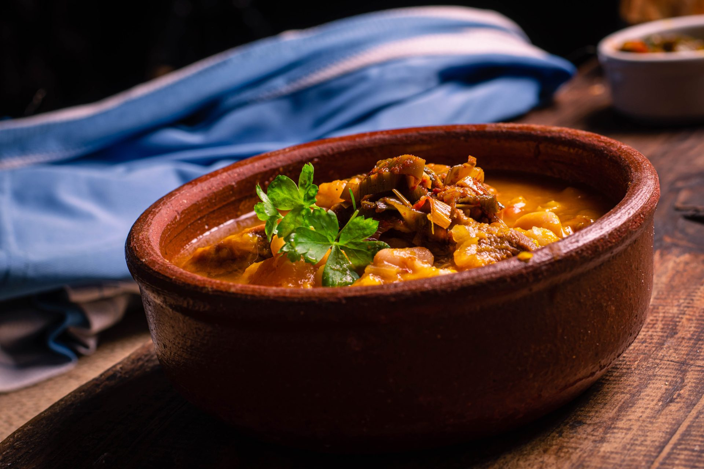
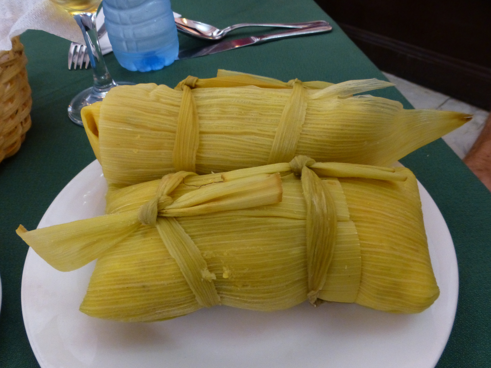
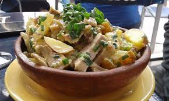

¡¡Gastronomia!!
Region de Puna
Gastronomia
La gastronomía de la región de la Puna en Jujuy, Argentina, es un reflejo de la cultura andina, influenciada por su clima árido y su altitud. Se caracteriza por el uso de ingredientes locales como la carne de llama, el maíz, la quinoa y las papas, que son adaptaciones a las condiciones extremas de la región. Aquí te detallo algunos de los platillos y bebidas más representativos:
Comidas populares



